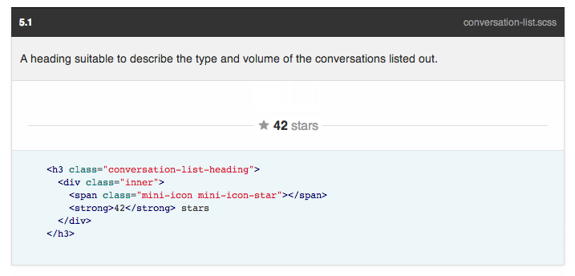

Le CSS a initialement été conçu pour séparer contenu et présentation dans les pages web de l'époque. Similairement au PHP, il a été en
Tous les ajouts de ces dernières années au CSS se résument à des ajouts en terme de possibilités visuelles (ombres, dégradés, filtres, etc.) alors qu'une grosse partie du problème se situe dans la syntaxe du langage et ses limitations
Similairement au PHP, le CSS crée à l'origine pour des styles basiques est devenu bien trop simpliste comparé aux exigences et besoins des sites énormes crées à l'heure actuelle.
Les préprocesseurs sont des surcouches qui rajoutent des fonctionnalités programmatiques ou syntaxiques à un langage. Ils en corrigent les défauts et expriment le désir des développeurs face aux évolutions du langage.
Par exemple les variables, initialement introduites par les préprocesseurs CSS, sont maintenant considérées comme prochain ajout.
Existe depuis 2009, écrit en Javascript, tente de conserver la philosophie déclarative du CSS (pas de conditions etc.)
Existe depuis 2011.
Relativement puissant, mais sacrifie lisibilité au profit de tours de magie syntaxiques
Existe depuis 2006, le plus puissant des trois, écrit en Ruby.
Est accompagné d'un framework extrêmement complet : Compass
@base: #f938ab;
.box-shadow(@style, @c) when (iscolor(@c)) {
box-shadow: @style @c;
-webkit-box-shadow: @style @c;
-moz-box-shadow: @style @c;
}
.box-shadow(@style, @alpha: 50%) when (isnumber(@alpha)) {
.box-shadow(@style, rgba(0, 0, 0, @alpha));
}
.box {
color: saturate(@base, 5%);
border-color: lighten(@base, 30%);
div { .box-shadow(0 0 5px, 30%) }
}
border-radius()
-webkit-border-radius arguments
-moz-border-radius arguments
border-radius arguments
body
font 12px Helvetica, Arial, sans-serif
a.button
border-radius 5px
@mixin table-base {
th {
text-align: center;
font-weight: bold;
}
td, th {padding: 2px}
}
@mixin left($dist) {
float: left;
margin-left: $dist;
}
#data {
@include left(10px);
@include table-base;
}Est le nom du langage lui-même. C'est aussi le nom donné à l'ancienne syntaxe du langage qui peut encore aujourd'hui être utilisée. Cette syntaxe est dérivée du Ruby et est donc basée sur l'indentation.
Est le nom de la "nouvelle" syntaxe, basée sur le CSS. Toute feuille de CSS est ainsi par défaut une feuille de SCSS aussi.
Est un framework/extension à **Sass**, il rajoute des centaines de fonctions, mixins et outils permettant de prémâcher une grande partie du travail. C'est un peu le _jQuery_ de Sass et CSS.
=table-base
th
text-align: center
font-weight: bold
td, th
padding: 2px
=left($dist)
float: left
margin-left: $dist
#data
+left(10px)
+table-base
@mixin table-base {
th {
text-align: center;
font-weight: bold;
}
td, th {padding: 2px}
}
@mixin left($dist) {
float: left;
margin-left: $dist;
}
#data {
@include left(10px);
@include table-base;
}
@import "compass";
@import "compass/layout/sticky-footer";
// Precreated mixing
@include font-face("Lobster", font-files("Lobster.ttf", "Lobster.otf"));
@include sticky-footer(50px, "#body", "#footer");
// Sprites
@import "design/*.png";
#body {
$mainColor: lighten(black, 10);
@include design-sprite("dashboard");
#navigation {
@include background(linear-gradient(top, color-stops($mainColor, darken($mainColor, 5))));
@include text-shadow(fade(black, 20));
@include box-shadow(5px 5px 0 fade(black, 10));
a {
@include hover-link;
@include transition(all 0.3s);
hover: {
background: whitesmoke;
};
}
}body {
section {
header {
// ...
}
}
aside {
// ...
}
}body {}
body section {}
body section header {}
body aside {}
$light-red: rgba(255, 0, 0);
body {
background-color: darken($light-red, 25);
}body {
background-color: #1F3ED4;
}
$columns: 12;
$width: 2rem;
@for $i from 1 through $columns {
.span-#{$i} {
width: $width * $i;
}
}.span1 {
width: 2rem;
}
.span2 {
width: 4rem;
}
// ...
$networks: facebook, twitter, pinterest
@each $network in $networks {
.btn-#{$network} {
background-color: $color-{$network};
}
}.btn-facebook {
background-color: #2G9D2E;
}
.btn-twitter {
background-color: #D2E5DE;
}
// ...
@function grey($lightness) {
@return lighten(black, $lightness);
}
@mixin button($color) {
background-color: $color;
&:hover {
background-color: darken($color, .10);
}
}
.btn {
@include button(grey(20));
}.btn {
background-color: hsl(0, 0, 20);
}
.btn:hover {
background-color: hsl(0, 0, 10);
}
.media {
background-color: red;
}
body {
@import "media";
}
// ...body .media {
background-color: red;
}
.btn {
background: red;
&:hover { background: blue }
}
%faded-out {
opacity: 0.5;
}
.btn-faded {
@extend .btn;
@extend %faded-out;
background: grey;
}.btn, .btn-faded {
background: red;
}
.btn:hover, .btn-faded:hover {
background: blue;
}
.btn-faded {
opacity: 0.5;
}
.btn-faded {
background: grey;
}
body {
@include clearfix;
@include background-image(
radial-gradient(
45px 45px, cyan 10px,
dodgerblue 30px
));
}body {
overflow: hidden;
*zoom: 1
background-image: -webkit-gradient(radial, 45px 45px, 0, 45px 45px, 30, color-stop(33.333%, #00ffff), color-stop(100%, #1e90ff));
background-image: -webkit-radial-gradient(45px 45px, #00ffff 10px, #1e90ff 30px);
background-image: -moz-radial-gradient(45px 45px, #00ffff 10px, #1e90ff 30px);
background-image: -o-radial-gradient(45px 45px, #00ffff 10px, #1e90ff 30px);
background-image: -ms-radial-gradient(45px 45px, #00ffff 10px, #1e90ff 30px);
background-image: radial-gradient(45px 45px, #00ffff 10px, #1e90ff 30px);
}
.example {
@include display-box;
@include box-orient(horizontal);
@include box-align(stretch);
@include box-direction(reverse);
height: 200px;
width: 100%;
.content, .sidebar {
padding: 20px;
}
.content {
@include box-flex(4);
background-color: #c5c1b4;
}
.sidebar {
@include box-flex(1);
background-color: #375f99;
margin-right: 1px;
}.example {
display: -webkit-box;
display: -moz-box;
display: -ms-box;
display: box;
-webkit-box-orient: horizontal;
-moz-box-orient: horizontal;
-ms-box-orient: horizontal;
box-orient: horizontal;
-webkit-box-align: stretch;
-moz-box-align: stretch;
-ms-box-align: stretch;
box-align: stretch;
-webkit-box-direction: reverse;
-moz-box-direction: reverse;
-ms-box-direction: reverse;
box-direction: reverse;
height: 200px;
width: 100%;
}
.example .content, .example .sidebar {
padding: 20px;
}
.example .content {
-webkit-box-flex: 4;
-moz-box-flex: 4;
-ms-box-flex: 4;
box-flex: 4;
background-color: #c5c1b4;
}
.example .sidebar {
-webkit-box-flex: 1;
-moz-box-flex: 1;
-ms-box-flex: 1;
box-flex: 1;
background-color: #375f99;
margin-right: 1px;
}
@import "my-icons/*.png";
@include all-my-icons-sprites;.my-icons-sprite,
.my-icons-delete,
.my-icons-edit,
.my-icons-new,
.my-icons-save { background: url('/images/my-icons-s34fe0604ab.png') no-repeat; }
.my-icons-delete { background-position: 0 0; }
.my-icons-edit { background-position: 0 -32px; }
.my-icons-new { background-position: 0 -64px; }
.my-icons-save { background-position: 0 -96px; }
@include establish-baseline(16px);
h1 {
@include rhythm(3, 1, 0, 2, 42px);
}
blockquote {
@include leading-border(2px, .5);
@include trailing-border(2px, .5);
}html {
font-size: 100%;
line-height: 1.5em;
}
h1 {
margin-top: 1.71429em;
padding-top: 0.57143em;
padding-bottom: 0em;
margin-bottom: 1.14286em;
}
blockquote {
border-top-width: 0.125em;
border-top-style: solid;
padding-top: 0.625em;
border-bottom-width: 0.125em;
border-bottom-style: solid;
padding-bottom: 0.625em;
}
Si quelque chose est long, répetitif, inélégant ou juste chiant à faire,
Compass saura le faire en quelques lignes
Pour palier au manque de solutions de mise en page en CSS, un problème qui dure depuis son existence, ont été inventées les grilles. Une manière de découper une page en lignes et colonnes.
<div class="row">
<div class="span9">
Level 1 column
<div class="row">
<div class="span6">Level 2</div>
<div class="span2 offset1">Level 2</div>
</div>
</div>
</div>
@import "susy";
// Number of columns
$total-columns: 5;
// Width of each column
$column-width : 4em;
// Space between columns
$gutter-width : 1em;
// Layout sizes
$tablet: 8;
$computer: 55em 12;
@include at-breakpoint($computer) {
body .container {
#controls {
#title {
@include span-columns(5);
}
#buttons {
@include span-columns(5 omega);
}
}
table {
@include prefix(1);
@include suffix(1);
}
}
}
@include at-breakpoint($tablet) {
body .container {
@include span-columns(3);
}
}@media (min-width: 55em) {
body .container #controls #title {
width: 40.67797%;
float: left;
margin-right: 1.69492%;
}
body .container #controls #buttons {
width: 40.67797%;
float: right;
margin-right: 0;
}
body .container table {
padding-left: 8.47458%;
padding-right: 8.47458%;
}
}
@media (min-width: 39em) {
body .container #header span {
display: inline;
}
}L'OOCSS (**Object-Oriented CSS**) est une méthodologie CSS répandue consistant à approcher l'intégration d'un site en **modules** – repérer les élements visuels redondants au sein d'un design et les abstraire en des _morceaux_ de design réutilisables et combinables. Le site _Github_ propose un bon exemple d'OOCSS dans son styleguide, où l'on peut consulter l'ensemble des modules utilisés sur le site.
L'exemple le plus facile à donner en parlant d'OOCSS est le cas basique d'un bouton.
.button {
name: Benjamin;
color: grey;
background: white;
}Button
Nous avons ici un module basique de bouton réutilisé partout sur le site. Si le style du bouton change, il changera uniformément sur l'ensemble des pages.
Les modules ont ensuite des variantes, et/ou des élements contenus à l'intérieur d'eux. Un bouton pourra par exemple être rouge pour indiquer une action dangereuse, ou contenir une îcone.
.button.button-danger {
backgroud: red;
}.button .icon {
margin-right: .25rem;
}Button
Button
Dans de nombreuses implémentations de l'OOCSS, un manque de conventions de nommage peut rendre très vite confus un ensemble de modules. Il existe heureusement des conventions pour faciliter cela; la plus connue étant la norme **BEM** pour _Block, Element, Modifier_.
a.button {
background: white;
color: black;
}
a.button.danger {
backgroud: red;
}
a.button.danger i {
margin-right: .25rem;
}.button {
background: white;
color: black;
}
.button.button-danger {
backgroud: red;
}
.button .icon {
margin-right: .25rem;
}.button {
background: white;
color: black;
}
.button--danger {
backgroud: red;
}
.button__icon {
margin-right: .25rem;
}
Le but de la norme BEM est de découpler présentation et structure. Dans de nombreuses intégrations CSS, on trouve des noms d'élements et/ou des élements enfants verrouillés à cause de la CSS :
div.user-infos {
figure.large {
// The User avatar
}
}Ce style de code empêche, d'une, d'utiliser un autre élement que `div` pour afficher les infos de l'utilisateur, et de deux, d'utiliser les styles de son avatar ailleurs que dans ses infos.
BEM utilise alors deux séparateurs : `--` et `__`. Cela permet non seulement de donner des noms plus complets à une classe mais aussi de discerner directement quelle partie d'un module elle représente.
div.person {}
div.person aside {}
div.female {}
div.female aside.hand {}
div.person aside.hand.left.person {}
.hand {}
.female {}
.female-hand {}
.left-hand {}.person {}
.person__hand {}
.person--female {}
.person--female__hand {}
.person__hand--left {}